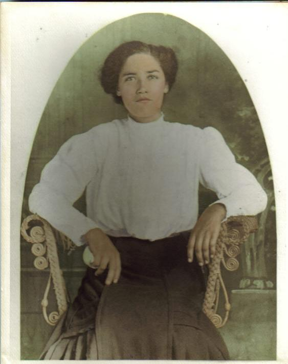
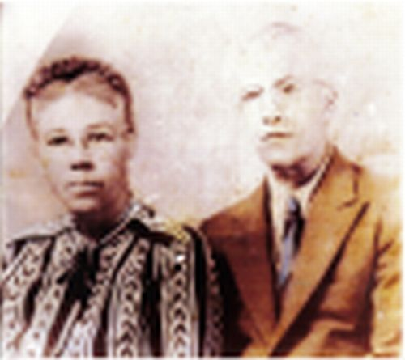
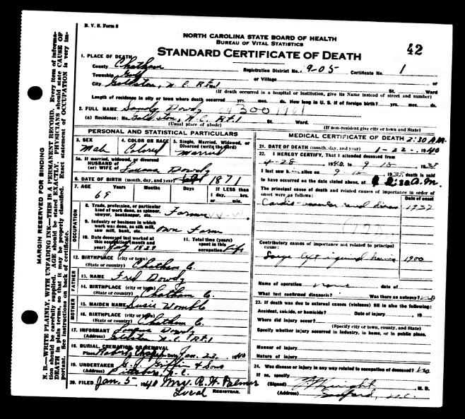
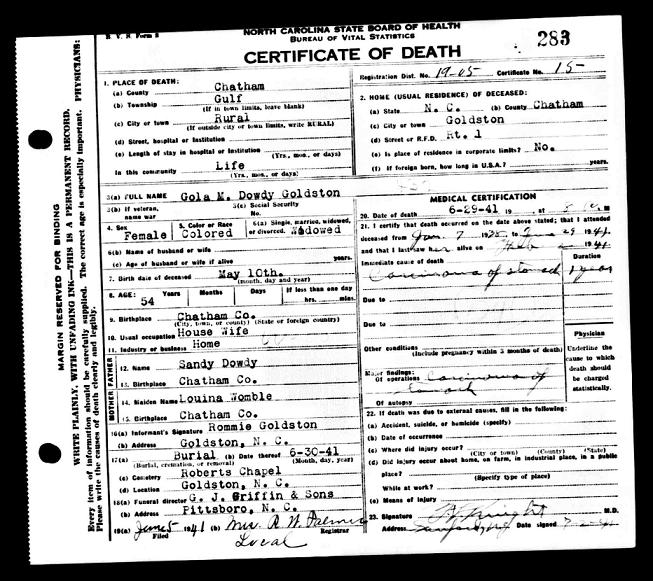
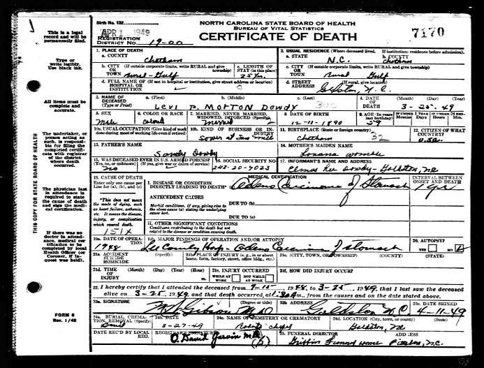
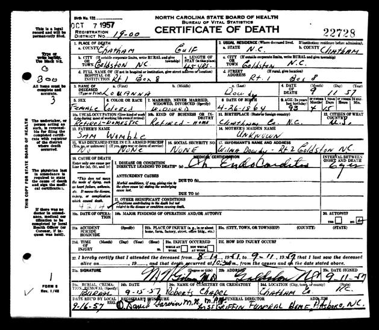
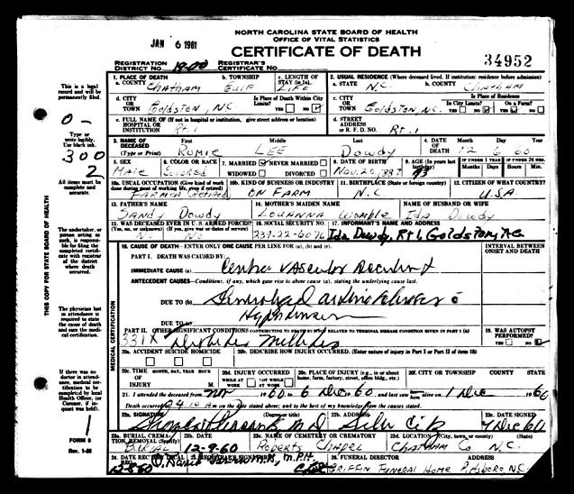

|
This Lineage Last Updated
August 2023
Ann Dowdy
She was born about 1842 NC Living with son Sandy Dowdy
in 1910 census using the Dowdy surname. Enumerated as "widow"
having 1 child livng out of a total number of children of one.
She married 2nd Lloyd Emerson before 1880 census. Ann Emmerson
(black, age 36) is living in HH of Lloyd Emmerson (white, age
?30) in the 1870 Gulf, Chatham Co NC census. In this household
is Sandy "Emmerson" (black, age 8) and Emma "Emmerson"
(black, age 6). The Emmerson household is enumerated next to
James Dowdy (white, see Genforum posting just before the death
cert. images below)
children: (may have been born outside
marriage)
1(i). Sandy Dowdy born June 1858 (1860 at time of marriage,
1862 according to 1870 census) NC, enumerated as a mulatto. Living
Gulf Township Chatham Co NC in 1900, 1910, 1920, 1930 census.
In 1880, Sandy is living with his mother Ann and Stepfather Lloyd
Emerson
[ERROR
ALERT - see SANDY DOWDY death certificate below.Another
Sandy Dowdy b 1868 was listed in 1870 Hickory Mt. Chatham Co
HH of Iven Dowdy b 1847 and wife Matilda. His
death certificate posted below states
he was
the son of Fred Dowdy and Susie Womble and 69 years and born
in 1871 in Chatham Co., NC. He died 22 January 1940 in Goldston,
Chatham Co., NC and is buried in the Roberts Chapel Cemetery.
[NC Death Certificate]
Next door in the census is Ider Dowdy b 1825- all of
African ancestry].
On 10 Nov 1899, Sandy Dowdy and wife Louanna sold 14 acres
of land to Archie H. Oldham adjoining J.H. Burke, Jordon Tysor
and J.R. Bright. Sandy Dowdy purchased 144 acres in Gulf Township
on August 10, 1908 adjoining the land of John R. Dowdy, T. J.
Goldston and S. J. Fields. He and wife Louanna sold the same
land immediately to Adline P. Clark. Then on 14 April 1920, Sandy
Dowdy purchased a storehouse and lot in the town of Goldston
with Joe E. Reaves from R. D. Palmer of Niagra NY. In 1912, he
purchased by mortgage 129 acres from J. M. Wicker adjoining Ed
Hilliard and James E. Goldston. The mortgage was satisfied in
1919. In 1918 Sandy and wife Louanna sold to H.G Goldston and
wife Golie Dowdy Goldston 33 acres on Indian Creek for $550 land
adjoining W. L Goldston. In 1919, Sandy leased his farm 2 miles
southwest from Golston to Fisher Holmes for 3 years. Holmes paid
Dowdy 1/4 of the crops raised during the tenure. He also sold
20 acres to his son L.M. Dowdy for $100. He sold 3 acres to Fred
Dark in 1921 for $43. Also in 1921, he signed over 114 acres
to his wife Louanna Dowdy. The land adjoined J.E. Golston, F.R.
Dark, W.L. Goldston and son L.M. Dowdy's property. Sandy and
his partner Joe E. Reaves sold their storehouse and lot in the
town of Goldston in 1927 to new partners, George and E.C. Wombley
and the same Joe Reaves. At the time of sale, the storehouse
was the location of the Goldston Fruit and Ice Cream Company.
Louanna sold 2 acres for $1 to Frank and Ella Tysor in 1921.
Louanna mortgaged her 114 acres for $463 in 1930 payable in 6
months. The note was stamped as satisfied. Finally on the 25th
of May 1834, Louanna and Sandy Dowdy sold 114 acres on Indian
Creek known as the "Sandy Dowdy Place" to W.O. McGibony
for $800 payable in installments.
In 2007, the Chatham Co Commission approved the naming of
a private road "Sandy Dowdy Road"
Directions: Take NC highway #902 West. Continue to Pittsboro
Goldston Road. Turn left on South Main Street. Turn Right on
Goldston Glendon Road. Sandy Dowdy Road will be on the Right.
married Louanna Womble on 25 December 1885 by W. R.
Pattishall J.P. at Oakland, Chatham Co NC (Wit: WH White, Jerry
Finch). She was
born 26 April 1864 in Chatham Co., NC and died 11 September 1957
in Goldston, Chatham Co., NC. She was buried in the Roberts Chapel
Cementer. [NC Death Certificate]
See this family in the 1900
Chatham Co NC Census for the Gulf Community
children:
2(i). Goldie Dowdy born
19 January 1887 in Chatham Co., NC and died 30 June 1941 in Goldston,
Chatham Co., NC. She was buried in the Roberts Chapel Cemetery
[NC death Certificate]. She witnessed the marriage of
her brother Morton Dowdy

Goldie Dowdy
married 1) Lee Oldham married 8 Jul 1903. Died before
1910
children:
3(i). McKinley Oldham b about 1907. Living with grandfather
Sandy Dowdy in the 1910 and 1920 census
married 2) H G Goldston married at Chatham Co NC 26
Nov 1913
(see email from Michael Cotton below for more information
on this family)
2(ii). Romulus [Romie] Dowdy born 20 November 1887 in Chatham Co., and
died 6 December 1960 in Goldston, Chatham Co., NC. He was buried
in the Roberts Chapel Cemetery. [NC Death Certificate.]
married Ida Tysor on 19 September 1915 at Gulf Township,
Chatham Co NC [marriage info also found on the link to marriage
document for brother Morton Dowdy below]
children:
3(i). Alberta Dowdy born about 1915
3(ii). Norfus Dowdy born about 1916
3(iii). Romey L. Dowdy born 9 June 1918
3(iv). Hal Dowdy born about 1921
3(v). Omer Dowdy born Mar 4, 1923
3(vi). Erma Dowdy born about 1923
3(vii). Ora L. Dowdy born about 1925
3(viii). Lucille Dowdy born about 1926
3(ix). daughter Dowdy born 20 July 1927 [per NC birth
index]
3(x). Leona Dowdy (male) born 25 December 1929 at Goldston.
Died 5 Mar 1930. Father Ramil Dowdy, Mother Ida Headen; buried
Roberts Chapel [Death Certificate]
3(xi). Mary Francis Dowdy born 3 June 1931
2(iii). Levi P. Morton Dowdy was born 19 January 1890 in Chatham Co.,
NC and died 25 March 1949 in Goldston, Chatham Co., NC. He is
buried in the Roberts Chapel Cemetery. [NC Death Certificate],
Farmer
married Jossie Palmer on 16 January 1910 by Minister
M. W. Brown at Gulf Township; Witnessed by E. C. Murchison, Golie
Dowdy and Rosie Palmer
see the marriage
record for Levi M. Dowdy and Josie Palmer
see the WWI
Draft Registration Card for Levi Morton Dowdy
see this family in the 1920
Chatham Co NC Census for the Gulf Community
see this family in the 1930
Chatham Co NC Census for the Gulf Community
children:
3(i). Elmus Lee Dowdy born 9 March 1911
3(ii). Lucille Dowdy born about 1914
3(iii). Annie Levonia Dowdy born 9 May 1916
3(iv). Liddell Morton Dowdy born 15 May 1918
3(v). Raphael Dowdy [son] born about 1921
3(vi). John Ross Dowdy born 28 January 1923
3(vii). Edward Dowdy born about 1925
3(viii). Hazel Dowdy born 2 November 1927
Death Certificate:Name:
Hazel Dowdy Wicker[Hazel Dowdy Dowdy] Gender: Female Race: Black
Age: 33 Birth Date: 2 Nov 1927 Birth Place: Chatham, North Carolina,
United States Death Date: 14 Jan 1961 Death Location: Pittsboro,
Chatham Spouse's Name: Roy Wicker Father's Name: Martin Dowdy
Mother's Name: Jossie Dowdy RESIDENCE: Goldston, Chatham, North
Carolina Buried Roberts Chapel
3(ix). son Dowdy born 10 November 1928 [per NC birth
index]
3(x). Paul Russell Dowdy born 6 May 1929 [s/o Morton
and Jossie Dowdy per descendant]
3(xi). Linwood Palmer Dowdy born 14 March 1930 died
1 July 1998 at Sanford, Lee Co NC (source for dates: SSDI)
3(xii). Max Reynolds Dowdy born 16 December 1934
Death Certificate: Name: Max Reynold
Dowdy Gender: Male Race: Black Age: 36 Birth Date: 16 Dec 1934
Birth Place: North Carolina, United States Death Date: 20 Dec
1970 Death Location: Goldston, Chatham Father's Name: Morden
Dowdy Mother's Name: Joshie Palmer RESIDENCE: Goldston, Chatham,
North Carolina buried Roberts Chapel
possibly other children born after the 1930 census

Levi Morton Dowdy and wife Jossie Palmer Dowdy
2(iv). Patrick Holliday - adopted son. Living in the
household of Sandy and Louanna Dowdy in 1910
1(ii). Emma Dowdy born about
1862. Living with mother Ann and stepfather Lloyd Emerson in
the 1880 Gulf Township, Chatham Co NC census.
Emma Dowdy
the daughter of Annie Dowdy was born in 1861 in Chatham Co.,
NC. She died 29 January 1934 in Gulf, Chatham Co., NC and is
buried in the Roberts Chapel Cemetery. She was the wife of W.
M. Reaves. [NC Death Certificate]
Email received August 21, 2007
Hello my name is Lateasha Dowdy
All I Know Is That My Family Is From Goldston NC
My granddad is Paul Russell Dowdy And His Parents Names Where
Joies and Morton Dowdy.I Went to a family reunoin this year and
we were all out of wack when it came to our family tree.. it
was said that the family lived on what now called J Dowdy road
.I Know that my granddad has two sibling left that Levonnia Wicker
Dowdy & J Ross Dowdy Here Is A Photo Of My Great Grand Parents
Right Now I'm Trying To Find Out Some My Info On My Greatgranddad
which is Morton I Know He Only Had 32 other Siblings.And That
He Really Made A Name For His Self In Goldston.I Heard Something
about him Buying His property Foe Slave Owners .Well I Know I'm
Just Ramblin on but iI'm Just Intrested In My Family History.
Email received August 24, 2007
Well Levi Morton Dowdy Is My Great Grandad Paul R Dowdy
Is My Granddad He Died May 7 1976 he was born may 6 1929 thats
what it says in his obit. he was Married To My Grandmoms Midred
Brown Sometime in 1960 .He had 8 kid 5 kids with Midred Brown.
Irma Dowdy born Nov 17 1960. She died April 13 1999.Lueray Dowdy
April 16 1962. Sylvester Dowdy May 4 1963 Morton Dowdy july 10
1964 Barry Dowdy july 11 1966His Kids Prire to his marriage.Timothy
Reaves Age 47 His Mom Name is Peggyand Althia 51 Ross 62 .Thats
wha i know about my grand dad Pual Russel Dowdy He Died Before
iwas Born.Paul Has 28 Grandkids
Email received September 25, 2007 from Michael Cotton (descedant
of Golie Dowdy)
Golie's 1st husband: Lee Oldham (you have him listed).
To this union, a son was born by the name of William Mckinley
Oldham Dowdy (you have him listed).
Golie's 2nd husband: Henderson Goldston (+ 2 H.G. Goldston) -
my great-grandfather.
Golie and Henderson Goldston's children:
Romey Goldston..born about 1915 (deceased)
Mary Lou Goldston...born 1917 (deceased 2006)
Delphus Goldston..born about 1920 (deceased)
Raba E. Goldston..born about 1924 (deceased 1992)
Ionia Goldston..born about 1925 (still living!!)
Lita G. Goldston..born about 1927 (deceased)
#2 Mary Lou Goldston (my grandmother)..married Walter H. Cotten
(my grandfather). To this union, 4 children were born:
Goldia Ann Cotten
Bettie Lou Cotten (MY MOTHER!)
Walter O'Keith Cotten
Deborah Sue Cotten
Genforum Posting:
I am related the Dowdy family near Gulf.A Mulatto Ann(Dowdy)
Emerson who married a Loydd Emerson.(1880 census).
Ann Dowdy had had 3 children when she was a slave by a white
Dowdy.The white James Dowdy. Peter, and Mary Dowdy are relatives.Slave
Ann (Dowdy) Emerson daughter Emma (Dowdy)Lambert- Reaves was
married to a Reaves(Rives) and a Lambert. She had a brother named
Sondy Dowdy and a sister named Goldie. Emma had Children by both
husbands (Lambert and Reaves) Lela (Lambert) Snipes was her daughter
and my great grandmother. If you know anything about this family
please contact me at MDGrant@webtv.net or 314/383-2521 leave
a number and name. Thank you!
ERROR ALERT: This is the death
certificate for Sandy Dowdy who was born 1871. His wife is also
named Louanna and his mother's maiden name is Womble. Are all
of these just coincidences?





|

 Sandy
Dowdy
Sandy
Dowdy